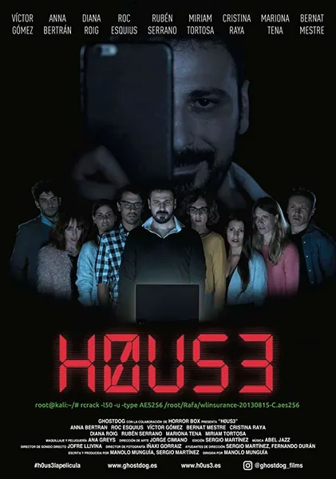

2018
Ужасы, Фантастика
Испанский хоррор о молодом хакере, для которого взлом систем — способ самоутвердиться. Очередная авантюра приводит его в странный дом, где виртуальная игра перестает быть игрой: опасность становится реальной, а правила начинает диктовать кто-то другой. Фильм обыгрывает иллюзию, знакомую каждому представителю «интернет-поколения» — убежденность в том, что по ту сторону экрана ничто не является «настоящим», — и задается вопросом: где именно заканчивается игра и начинается жизнь?
Описание на английском
A Spanish horror about a young hacker for whom breaking into systems is a way to prove himself. One more stunt leads him to a strange house where the virtual game stops being a game: the danger turns physical and someone else is setting the rules. The film plays with the illusion familiar to every online generation — that behind the screen nothing is 'real' — and asks where exactly the game ends and life begins.